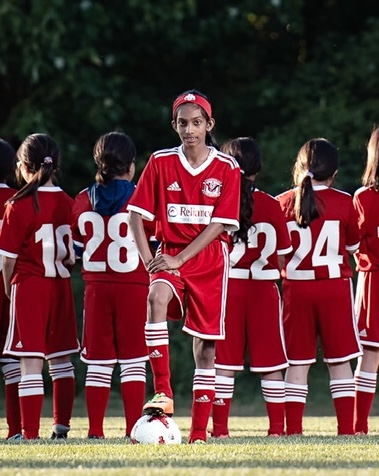
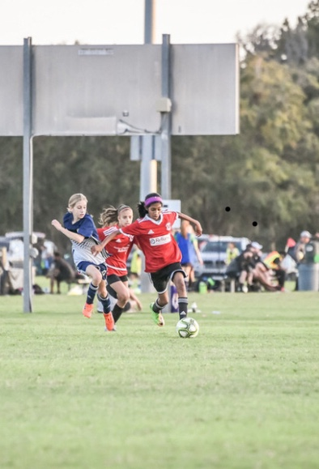
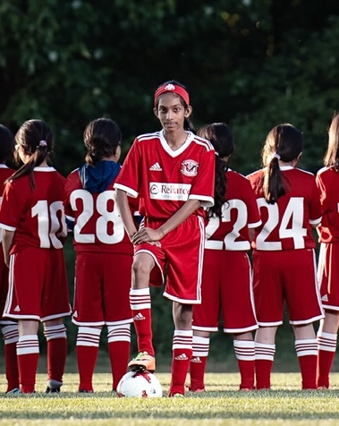
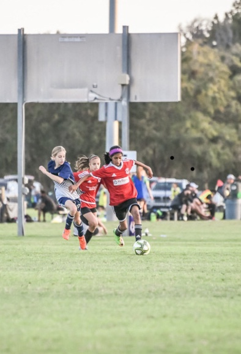

I started to play ice hockey at the age of 6. My dad placed me into ice hockey since I knew how to skate and have the knowledge of playing in a team sport. The next year‚ I joined the Scarborough Sharks Girls Hockey Association. I made lots of new friends‚ played my first hockey game and was on my first hockey team. I also played for the DS (development stream) team during my second year of girl's hockey. At the age of 9‚ I was selected to play for the Scarborough Sharks U10 competitive team. I have been playing rep-level hockey for 6 years‚ and I am currently playing for the Scarborough Sharks U15 team.
Skills learned outside this sport
Hockey has helped me develop skills outside this sport. I learned how to manage my time wisely while having a tight schedule for hockey. I learned how to be on time for practices and games which would help me in the future. Hockey has given me the most valuable skill of balancing my education and sports equally. In fact‚ I was awarded the athletic award and the academic award in my grade 6 graduation. It gave me the chance to develop good sportsmanship‚ habits and leadership skills. I also learned how to make new friends and socialize with others. This sport has helped me to gain responsibility by making sure that I am bringing all my equipment to the games and practices. Hockey has given me lots of valuable life lessons.
My Goals for Hockey
My Goals for Hockey are:
- To play this sport in my university team
- Continue playing ice hockey for the rest of high school
- Teach this sport to the future generations
Track & Field
I am a track & field athlete. I was introduced to this sport at the age of 4. I specialize in the 100-meter dash‚ long jump and triple jump. I participate in the minor track association where I compete with other athletes in Toronto. This summer I am planning to compete in the Athletic Ontario. My personal best for triple jump is 9.87 meters. For the long jump‚ my personal best is 4.67 meters. In the past‚ I have competed in the TDESAA meet which is run by the TDSB. In grade 6‚ I placed 1st in long jump for the North Conference and placed 5th in the TDSB City Championship. I also placed 2nd in triple jump for the North Conference and placed 6th in the TDSB City Championship in that same year.
Soccer
Soccer was the first sport that I have ever played. This sport was introduced to me at the age of 4. First I played house league with a boy's soccer club. Then at the age of 7‚ I played rep-level soccer at the same soccer club. At the age of 10‚ I joined the Unionville Milliken soccer club. I played rep-level girl’s soccer for 2 years at that club. My goal is to join the girl’s soccer team in high school.


 


